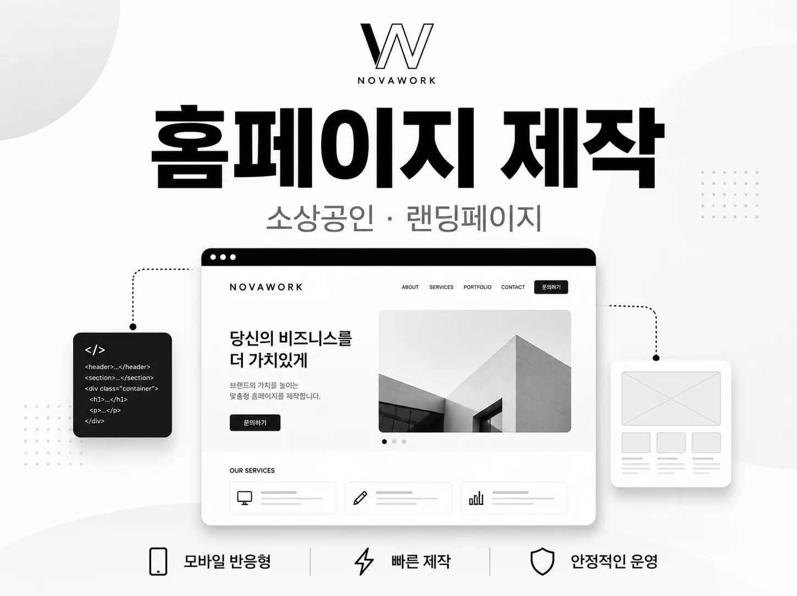
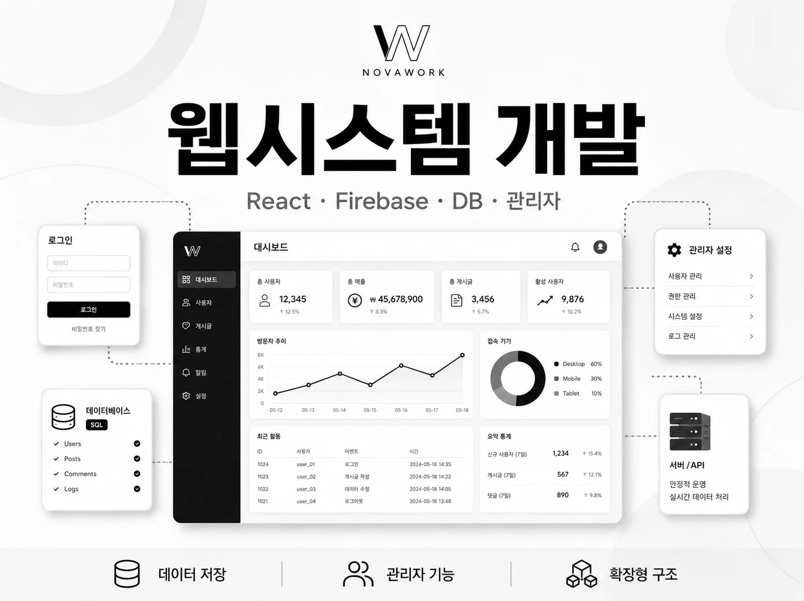
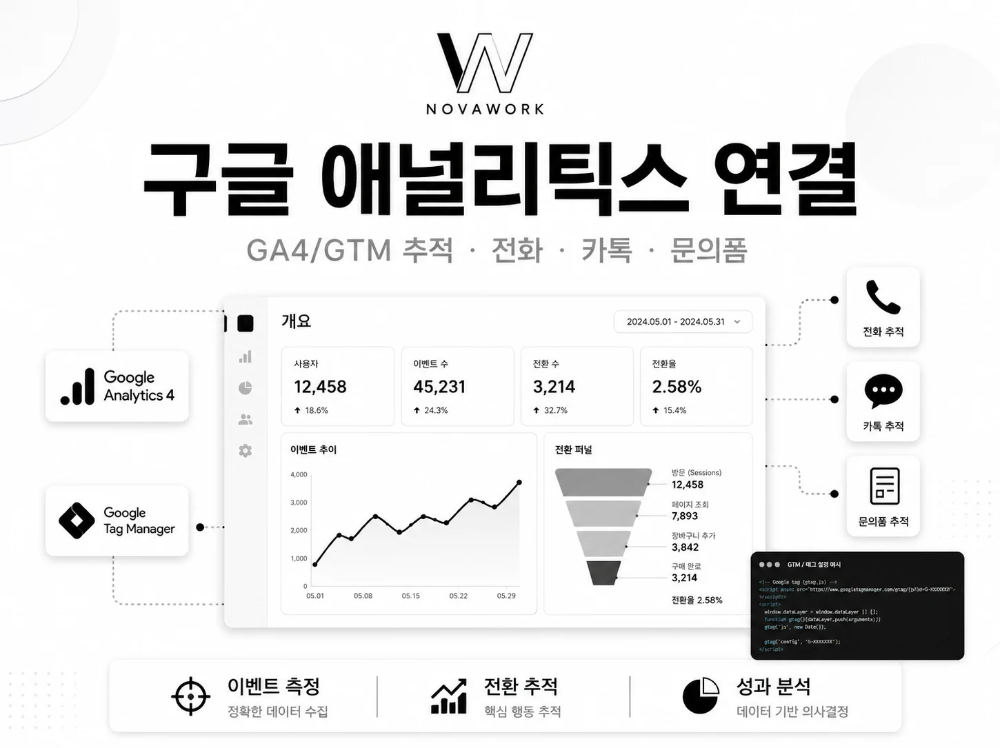
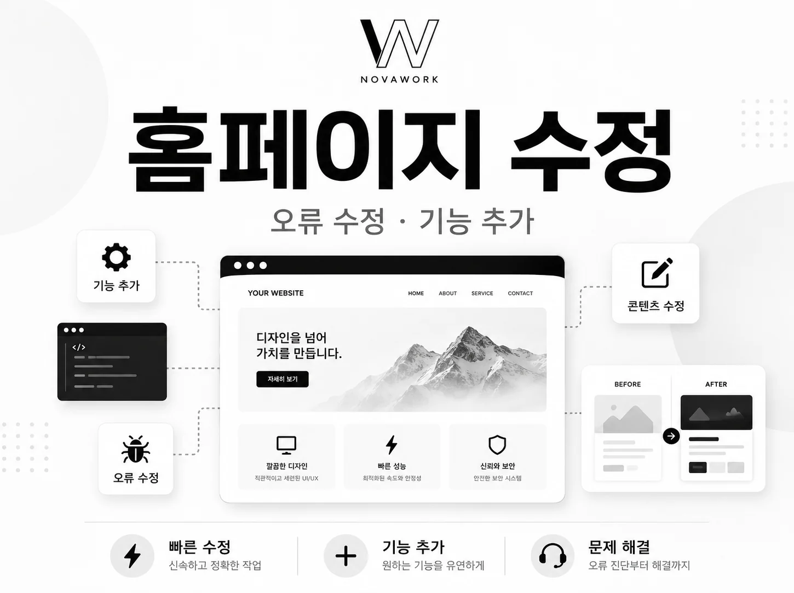
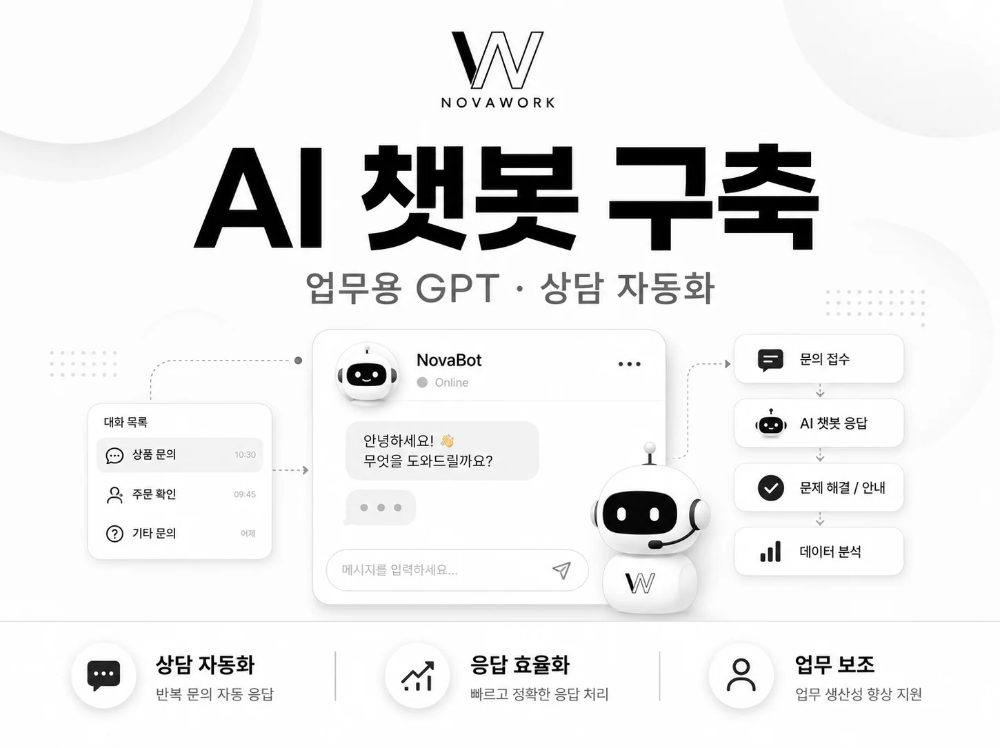
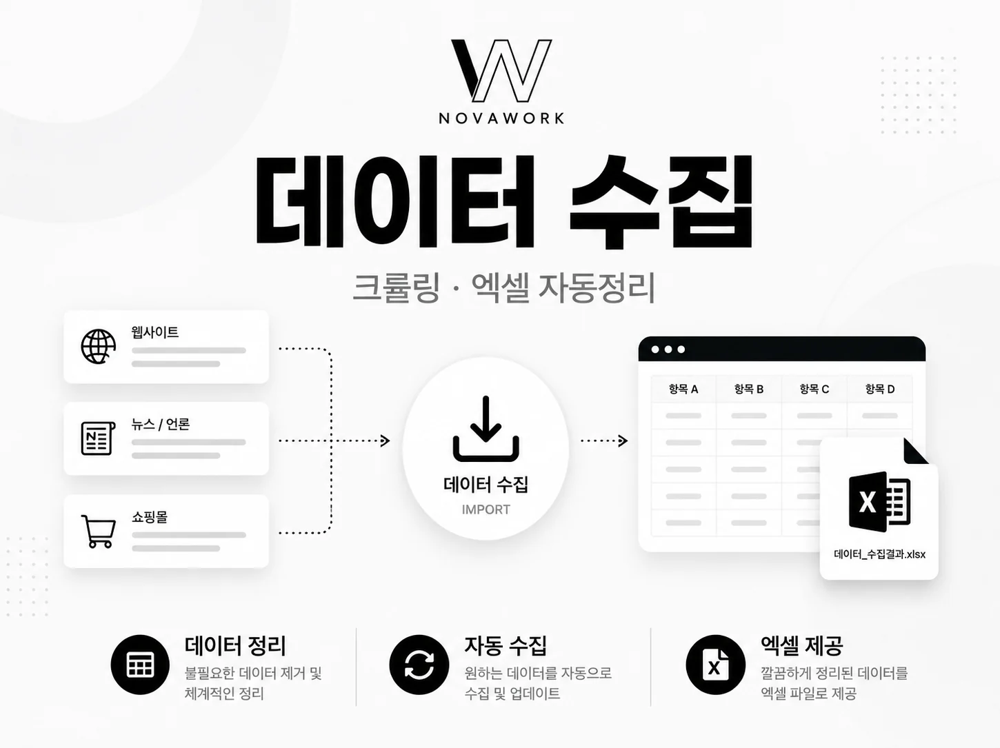
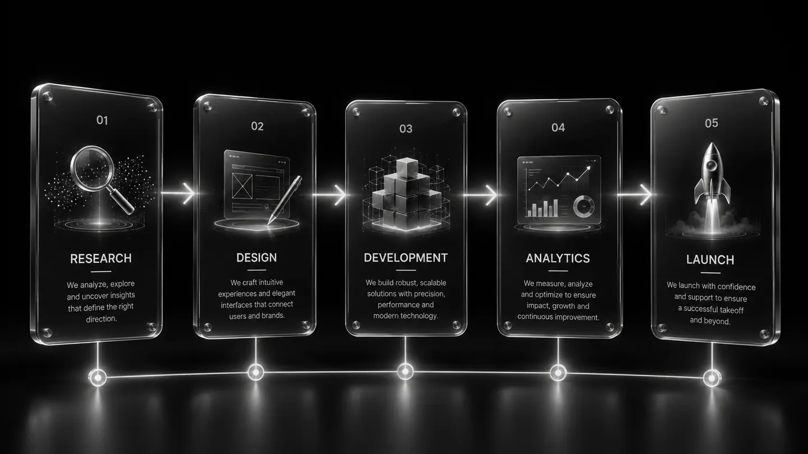

웹 제작
상세 보기
홈페이지·랜딩페이지
대표 링크, 서비스 소개, 후기, FAQ, 전화·카카오톡 문의 연결이 필요한 소개형 사이트에 적합합니다.
홈페이지·웹시스템·수정·추적·AI 챗봇·데이터 수집을 한 화면에서 비교하고, 자세한 범위는 각 상세 페이지에서 확인할 수 있습니다.



각 카드의 이미지를 보고 작업 유형을 먼저 구분한 뒤 상세 페이지로 이동할 수 있습니다.
대표 링크, 서비스 소개, 후기, FAQ, 전화·카카오톡 문의 연결이 필요한 소개형 사이트에 적합합니다.
입력폼, DB 저장, 로그인, 파일 업로드, 상태 관리, 검색·필터, 관리자 페이지가 필요한 운영형 웹서비스에 적합합니다.

기존 HTML/CSS/JavaScript/React 사이트의 문구·이미지·링크 수정, 반응형 보정, 간단한 인터랙션 추가를 처리합니다.
광고나 랜딩페이지 개선 전에 필요한 기본 측정 환경을 만들고, 주요 문의 행동이 GA4에 들어오는지 검수합니다.

고객 문의 응답, 내부 문서 검색, 상담 초안 작성, 홈페이지 삽입형 챗봇 UI와 응답 기준을 설계합니다.

상품명, 가격, 게시글, 공지, 날짜, 링크 등 구조화된 공개 데이터를 수집하고 중복·형식을 정리합니다.
홈페이지를 만든 뒤 측정이 빠지거나, 관리자 시스템을 만든 뒤 문의 동선이 비어 있거나, 챗봇을 넣었지만 사람이 확인할 기준이 없으면 운영이 끊깁니다. 패키지는 이 빈틈을 줄이기 위한 구조입니다.
홈페이지·랜딩페이지 제작 후 전화, 카카오톡, 문의폼, CTA 클릭이 GA4/GTM에 잡히도록 구성합니다.
신청폼, 관리자 화면, 데이터 저장 구조를 함께 설계해 실제 운영 중 확인할 항목을 분리합니다.
반복 문의, FAQ, 문서 기반 답변 흐름을 정리하고 사람이 확인해야 하는 기준까지 나눕니다.
아래 조합은 고정 견적이 아니라 상담을 빠르게 시작하기 위한 기준입니다. 실제 범위는 페이지 수, 기능 수, 데이터 항목, 계정 권한, 자료 준비 상태에 따라 확정됩니다.
대표 링크와 문의 측정을 동시에 시작하는 조합
기존 사이트를 고치고 전환 기준까지 잡는 조합
신청·예약 데이터를 저장하고 관리하는 운영형 조합
홈페이지 상담 흐름과 AI 응답 기준을 함께 만드는 조합
공개 데이터 수집 결과를 업무에 쓰기 좋게 정리하는 조합
서비스가 섞여 있거나 아직 방향이 명확하지 않은 경우
처음부터 모든 기능을 넣는 방식보다, 지금 필요한 결과물을 먼저 만들고 다음 단계에서 측정·AI·데이터를 연결하는 방식이 안정적입니다.

새로 만드는지, 기존 것을 고치는지, 저장·측정·AI·데이터가 필요한지 나눕니다.
필수 서비스와 나중에 붙일 서비스를 구분해 1차 작업 범위를 확정합니다.
화면, 관리자, 추적, AI, 데이터 결과물이 서로 끊기지 않도록 검수합니다.
필요한 결과물, 현재 사이트 여부, 저장해야 할 데이터, 측정하고 싶은 버튼, AI가 답해야 할 질문, 수집 대상 URL을 기준으로 조합을 정리합니다.
필요한 작업이 한 가지인지, 여러 서비스가 섞인 프로젝트인지 확인해 범위를 정리합니다.